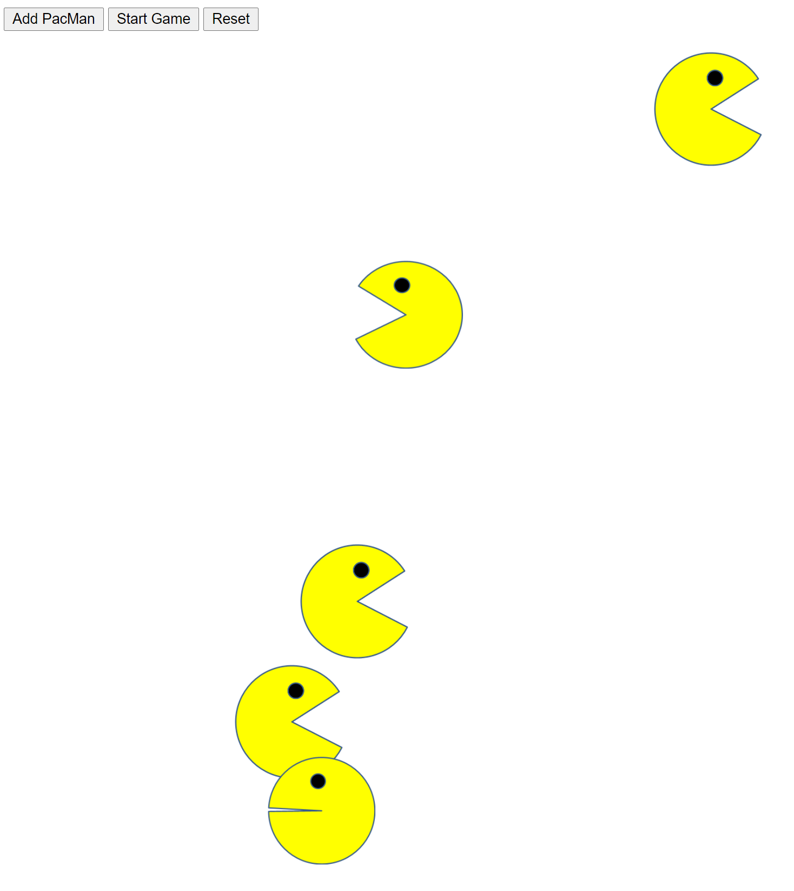
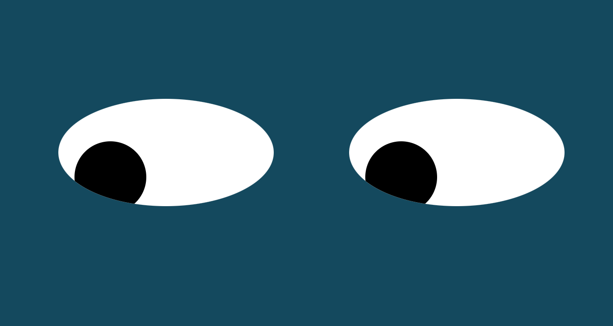

Project List

Pacman
This is a project where a PacMan is added with the press of a button. Pressing the start button allows the PacMen to move and bounce around on screen, each with their own speeds and sizes. The reset button cleans the screen.
Check out the project in your browser
Check out the repository on GitHub
